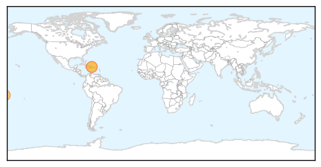

MERS
30-Day Web Trend
4 alerts, 2 warnings
30-Day Twitter Trend
0 alerts, 0 warnings
Article Locations

Article Confidences

Top Articles:
Top Tweets:
-
No tweets found for Sep 20, 2014
Chikungunya
30-Day Web Trend
0 alerts, 0 warnings

30-Day Twitter Trend
3 alerts, 0 warnings

Article Locations
Article Confidences

Top Articles:
- 0.993
- Chikungunya still spreading in Samoa
- 0.979
- Dominican Republic says mosquito-borne virus sickens nearly 500,000 - National
- 0.970
- Leauva’a worst hit by Chikungunya
- 0.961
- 500,000 people ill with mosquito-borne virus in Dominican Republic — RT News
- 0.698
- The Portland Press Herald / Maine Sunday Telegram
Top Tweets:
-
No tweets found for Sep 20, 2014